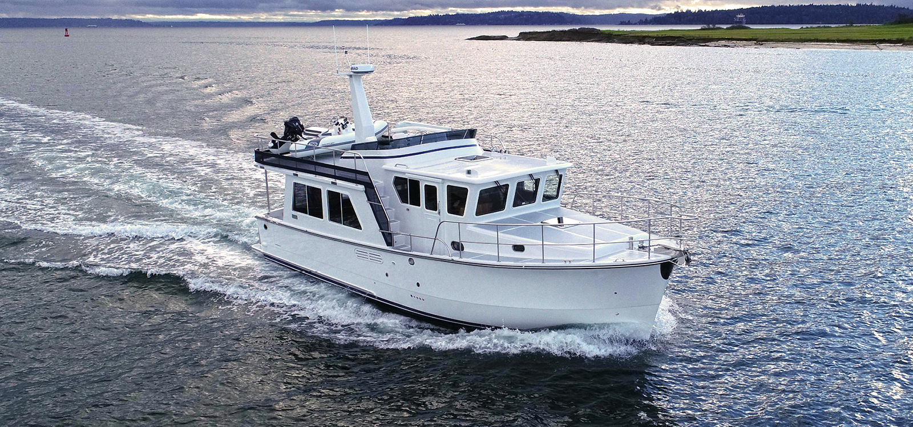

Helmsman 43E Pilothouse Pilothouse
From 2018
The Helmsman 43E Pilothouse is a modern single-diesel semi-displacement cruising trawler emphasizing protected running gear, practical machinery access, low exterior maintenance and warm traditional interiors. Helmsman’s range spans the Camano-derived 31 Sedan through larger raised-pilothouse boats intended for extended coastal and long-range cruising.

- Length
- 45.5 ft
- Beam
- 14.17 ft
- Draft
- 4.5 ft
- Hull behaviour
- Semi-Displacement
- Fuel
- Diesel
- Propulsion
- Shaft
- Engine configuration
- Single inboard diesel
- Boat family
- Trawler
- Construction
- Fiberglass
Best for
- Couples planning serious coastal and extended cruising
- Owners wanting traditional trawler utility without exterior teak burden
- Buyers prioritizing machinery access and single-diesel efficiency
Trade-offs
- Wide-beam larger models require substantial marina and haul-out infrastructure
- Single-engine propulsion lacks second-engine redundancy
- Newer complex electrical, thruster and comfort systems increase systems-management burden
Known concerns
- No model-specific concern has been promoted to B-Atlas’s evidence threshold. This does not mean the model has no age-, condition- or hull-specific risks.
Inspection focus
- Verify factory build specification and optional-equipment list
- Inspect hull/deck penetrations, windows and pilothouse doors for leaks
- Inspect engine, cooling, exhaust, shaft, skeg, rudder and hydraulic steering
- Test bow/stern thrusters, charging, inverter, generator and navigation systems
- Confirm loaded weight, air draft and tankage for intended route
Continue researching
Related boat models
50.08 ft · Semi-Displacement
40.83 ft · Semi-Displacement
45 ft · Semi-Displacement
44.25 ft · Semi-Displacement
46.83 ft · Semi-Displacement
47.08 ft · Semi-Displacement
About this record
B-Atlas preserves uncertainty: missing information remains unknown rather than being treated as a negative. Specifications and guidance describe the model record; individual boats can differ by year, equipment, refit and condition.